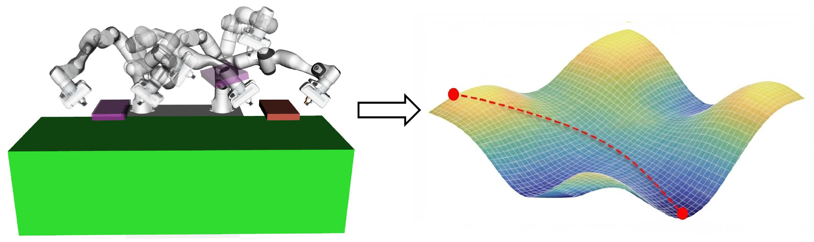
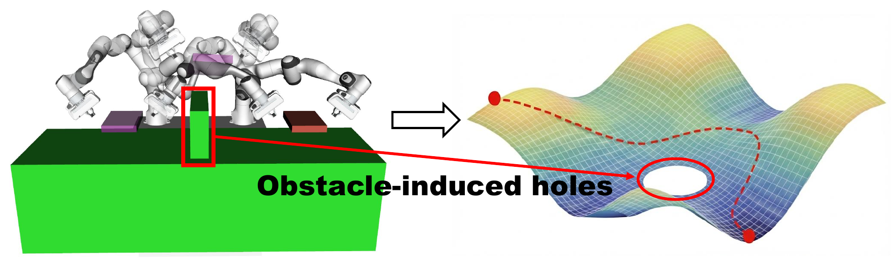
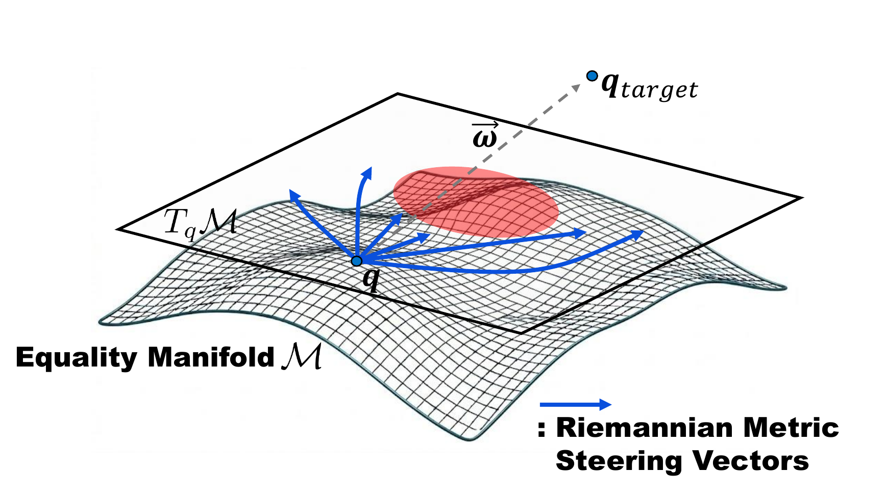
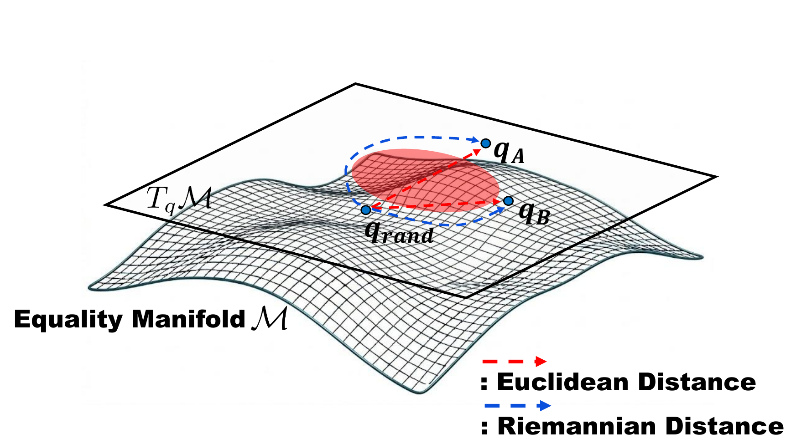
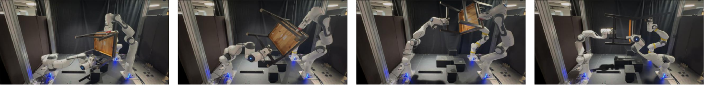
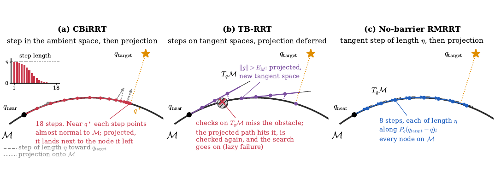

Overview
Inequality-Aware Exploration on Equality Manifolds
Robots that carry one object with two or three arms, or keep a tool level, move on an equality-constrained manifold. Sampling-based planners keep them on it by projection, but they meet the inequality constraints — collisions, joint limits, self-collision — only through binary validity checks: a step is tried, checked and thrown away. Near obstacles and in narrow passages, most of the search is spent this way.
Can a planner on a constraint manifold see the inequality constraints before it runs into them?
RMRRT turns every inequality margin that is close to its bound into a barrier term of a Riemannian metric, restricts that metric to the tangent space of the equality manifold, and uses it to steer each step and to decide which nodes to extend. The metric is built from the robot's own collision geometry with one parameter set for every task; feasibility is still decided by the standard collision check.
Try the planners
Interactive Demo
Pick a problem and a planner to replay its search step by step, then watch the robot follow the path it found. The robots' paths are shortcut and smoothed for display, in the same way for every planner; the numbers are those of the planner's own path. Drag to rotate the view and scroll to zoom. On the sphere, the red balls are obstacles that leave two narrow gates between the start (green) and the goal (blue).
Problem
Load the demo to start.
Planner
- Start tree
- Goal tree
- Rejected by the collision check
- Path
Key findings
Fewer wasted collision checks, from a sphere to a humanoid
Two narrow gates
Than the same planner without the barrier, over 100 sphere instances.
21-DoF triple arm
2,998 instead of 15,211 collision checks per query among boxes.
Five scenarios
Queries solved in every robot scenario, 30 s each, one parameter set.
Planning performance across four experimental scenarios
| Planner | Scenario 1 | Scenario 2 | ||||
|---|---|---|---|---|---|---|
| Time (s) | Succ. (%) | Path len. | Time (s) | Succ. (%) | Path len. | |
| Projection- and atlas-based constrained samplers | ||||||
| CBiRRT | 0.36 ± 0.54 | 100 | 8.54 ± 3.68 | 2.97 ± 4.48 | 100 | 9.07 ± 2.75 |
| Atlas RRT | 1.04 ± 2.65 | 100 | 7.45 ± 3.08 | 3.87 ± 6.34 | 100 | 9.87 ± 3.22 |
| Tangent Bundle RRT | 0.87 ± 3.34 | 100 | 9.12 ± 3.05 | 3.03 ± 4.32 | 100 | 9.61 ± 3.83 |
| Metric-based local methods (with equality projection) | ||||||
| RMP | 0.36 ± 0.18 | 56 | 5.00 ± 1.95 | 0.94 ± 0.59 | 80 | 6.57 ± 1.59 |
| CHOMP | 2.59 ± 2.90 | 38 | 10.34 ± 4.12 | 2.62 ± 3.73 | 67 | 12.61 ± 7.63 |
| Artificial Potential Field | 0.36 ± 0.16 | 54 | 5.08 ± 1.79 | 0.93 ± 0.54 | 84 | 6.84 ± 2.22 |
| Learning-based planners | ||||||
| LJCMP | 1.17 ± 3.30 | 100 | 12.45 ± 4.71 | 0.28 ± 0.65 | 100 | 11.97 ± 4.45 |
| CoMPNetX | 0.27 ± 0.67 | 100 | 6.10 ± 2.11 | 3.01 ± 3.77 | 100 | 8.61 ± 2.86 |
| Precomputed Graph RRT | 0.42 ± 0.69 | 100 | 8.89 ± 3.79 | 2.72 ± 3.67 | 100 | 9.06 ± 2.62 |
| RMRRT (ours) | 0.09 ± 0.14 | 100 | 8.05 ± 3.33 | 0.23 ± 0.31 | 100 | 10.92 ± 4.86 |
| Planner | Scenario 3 | Scenario 4 | ||||
|---|---|---|---|---|---|---|
| Time (s) | Succ. (%) | Path len. | Time (s) | Succ. (%) | Path len. | |
| Projection- and atlas-based constrained samplers | ||||||
| CBiRRT | 4.58 ± 9.20 | 100 | 9.53 ± 2.78 | 74.75 ± 118.59 | 90 | 10.67 ± 2.49 |
| Atlas RRT | 5.71 ± 9.27 | 100 | 9.56 ± 3.23 | 42.11 ± 105.49 | 92 | 10.54 ± 3.64 |
| Tangent Bundle RRT | 4.94 ± 10.11 | 100 | 9.80 ± 7.35 | 15.80 ± 57.35 | 87 | 11.01 ± 3.89 |
| Metric-based local methods (with equality projection) | ||||||
| RMP | 1.11 ± 0.64 | 72 | 6.76 ± 1.23 | 4.51 ± 11.35 | 88 | 9.18 ± 1.64 |
| CHOMP | 1.55 ± 3.83 | 31 | 7.22 ± 3.99 | 0.64 ± 0.38 | 41 | 9.02 ± 1.31 |
| Artificial Potential Field | 1.06 ± 0.66 | 73 | 6.86 ± 1.76 | 2.23 ± 1.33 | 85 | 9.07 ± 1.51 |
| Learning-based planners | ||||||
| LJCMP | 0.48 ± 1.56 | 100 | 12.31 ± 3.34 | 0.55 ± 1.69 | 100 | 16.44 ± 5.65 |
| CoMPNetX | 4.44 ± 6.29 | 100 | 8.91 ± 2.86 | 19.25 ± 52.08 | 100 | 9.80 ± 2.44 |
| Precomputed Graph RRT | 2.07 ± 3.29 | 100 | 9.51 ± 2.80 | 13.34 ± 35.11 | 100 | 11.41 ± 4.23 |
| RMRRT (ours) | 0.25 ± 0.26 | 100 | 12.63 ± 8.17 | 0.31 ± 0.39 | 100 | 11.09 ± 3.42 |
- The metric steers around what it sees. Steps bend away from nearby obstacles, joint limits and self-collision, so far fewer of them are rejected by the collision check.
- Node selection saves checks the steering cannot. A node is extended only when the step the metric predicts gets closer to the target; the rest cost no collision check at all.
- One implementation for every planner. All planners share the constraint, the MoveIt collision checker and the edge resolution, so the differences come from how they extend, not from the code.
Method
A barrier metric on the tangent space


Barrier metric
Each margin \(h_i\) below its activation width adds a rank-one term whose weight grows as the margin closes, so moving toward that boundary costs more than moving along it.
Projection onto the tangent space
A \(G\)-orthogonal projection restricts the metric to \(T_q\mathcal{M}\), so the steps stay on the equality manifold to first order and are then corrected onto it.

Centered steering
The step follows the metric toward the target and is pushed away from the closest boundaries; every step has the same length \(\eta\).

Riemannian node selection
The nearest node is extended only if the step the metric predicts from it approaches the target; otherwise the iteration ends without a collision check.
Beyond the paper
Two humanoids, one tray
A Unitree H1-2 and an IGRIS-C lift a shared tray over a divider. Their four arms form a single closed chain with 28 joints, and 18 equality constraints keep all four grasps fixed relative to the tray. RMRRT searches the resulting constraint manifold for a collision-free motion that carries the tray to the other side.
This additional simulation demo uses the same RMRRT settings as the paper. Planning took 7.16 s for the run shown and 6.7–8.4 s with the other random seeds.
Problem
Load the demo to start.
Planner
- Start tree
- Goal tree
- Rejected by the collision check
- Path
The trees are drawn where the tray would be at each node. For display, the found path is shortened and the arms are re-traced along the smoothed tray route; the planning time and the collision checks are those of the search.
Real world
Three arms, one closed chain
Three Franka arms hold one object in a closed chain and carry it among obstacles along the path planned by RMRRT.
Triple-arm transfer on hardware

Appendix
Why CBiRRT, TB-RRT and No-barrier differ
All three grow trees on the same manifold with the same collision checker; they differ in how one extension reaches the manifold. One collision check costs the same in each, so the planning time follows the number of checks.

Citation
BibTeX
@article{kang2026rmrrt,
title={{RMRRT}: Riemannian Barrier Metric {RRT} for Inequality-Aware Steering on Equality Manifolds},
author={Kang, Minhyeong and Kim, Sanghyun},
journal={IEEE Transactions on Robotics},
year={2026}
}